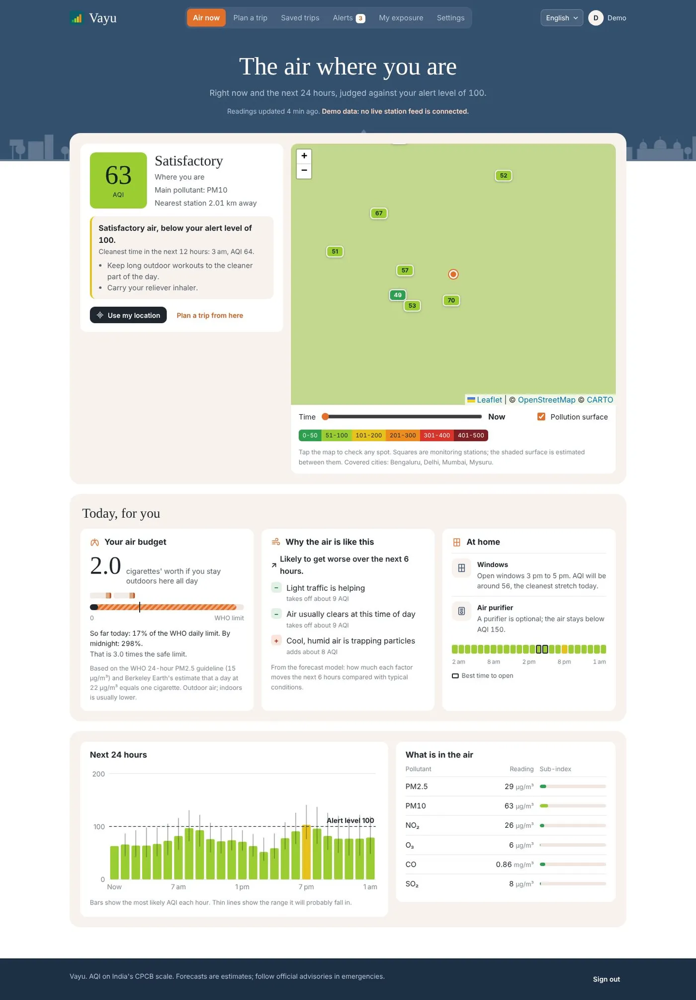
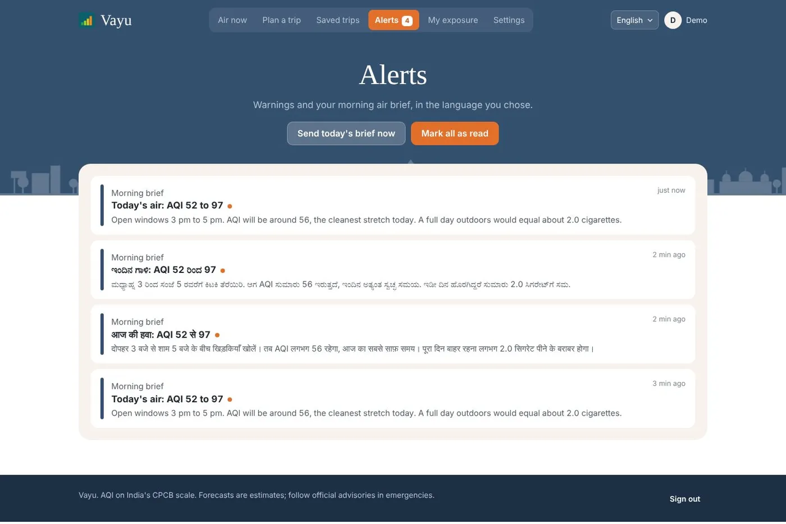
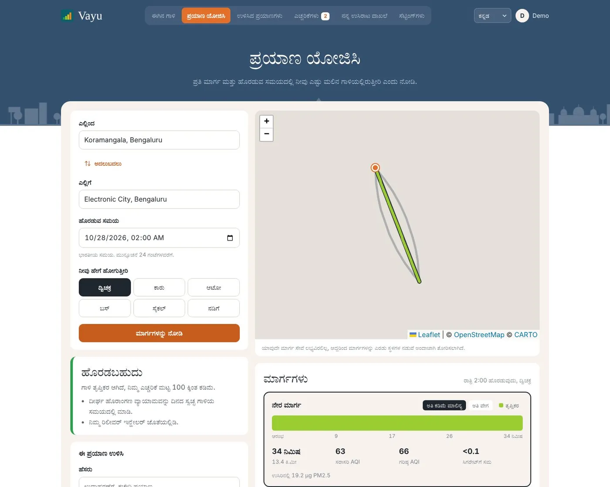
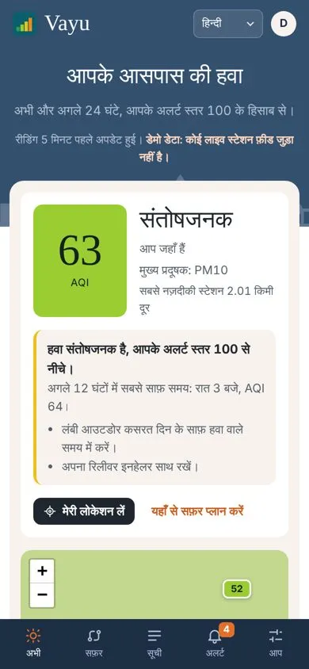

From a city number to a personal decision.
Vayu forecasts the Air Quality Index on India's official CPCB scale for the next 24 hours at any point in a covered city. It estimates how much polluted air you would breathe on each route and at each departure time, and alerts you when the air where you are, or on a trip you saved, crosses the level that is safe for your health.
An individual project, end to end.
My work
- Turned the brief (route-specific AQI forecasts and proactive alerts) into a product: who it is for, which decisions it supports and what it should not do.
- Made the product decisions below and built the backend, forecasting model, web app and deployment.
- Wrote the documentation: architecture, API, model evaluation, testing and deployment guides.
Air quality data exists. Useful advice does not.
People in Indian cities can look up an AQI number, but it describes the whole city at one moment. The real questions are personal: is my commute worse by one road than another, would leaving an hour later help, and is today's level a problem for someone with asthma, a child or an older parent? Without answers, the number is easy to ignore.
Turn air quality data into a decision someone can act on today.
Who Vayu is for.
| User | Need | How Vayu responds |
|---|---|---|
| Daily commuters | Choose the cleaner route and time | Compares up to 3 routes and departure times |
| People with asthma, COPD or heart disease | Know early when air is unsafe for them | Alerts at a stricter threshold (AQI 100) |
| Parents, pregnant women, people over 65, outdoor workers | Protect vulnerable people | Alerts at AQI 150 |
| Hindi and Kannada speakers | Understand advice in their own language | Full interface, alerts and briefs in three languages |
Decisions, requirements and rules.
Product objective
Help people reduce the pollution they breathe by giving them a small number of clear, personal and trustworthy recommendations, not a dashboard of numbers.
Key decisions
Score exposure, not AQI
Core value- Decision
- Score a trip by the PM2.5 you would actually inhale: forecast pollution where you are each minute, times your breathing rate for how you travel, times how much outside air gets in.
- Why
- The same route can be fine by car with the windows up and a bad idea by bicycle. A city AQI cannot show that.
Only speak up when it matters
Prioritization- Decision
- Suggest a different route or departure time only when it cuts the dose by 12% or more.
- Trade-off
- Some small improvements go unmentioned, in exchange for advice that is rare enough to be read and acted on.
Use the scale people already know
Adoption- Decision
- Use India's CPCB AQI scale and its six color bands rather than the US scale many data sources provide.
- Why
- That is the scale people see on the news and on official displays, so Vayu's numbers match what they already trust.
Make pollution feel real
Communication- Decision
- Convert inhaled PM2.5 into a cigarette equivalent and track it against a daily budget based on the WHO guideline.
- Why
- "Today equals 3 cigarettes" lands in a way "AQI 160" does not.
Be honest about uncertainty
Trust- Decision
- Show a likely range for every forecast, and say plainly when a point is more than 45 km from any monitoring station.
- Why
- A confident wrong number would cost more trust than an honest range.
Scope: delivered and deferred
| Feature | Status |
|---|---|
| 24-hour forecasts with ranges, map, current advice | Delivered |
| Trip planner: routes, departure-time scan, travel mode | Delivered |
| Health profiles, alerts, quiet hours, morning brief | Delivered |
| Plain-language explanations of what drives the forecast | Delivered |
| Home advice: when to open windows, when to run a purifier | Delivered |
| Weather forecasts as a model input | Future scope |
| Satellite data for areas without stations | Future scope |
| More languages (Tamil, Telugu, Marathi) and voice alerts | Future scope |
Business problem
The brief asked for route-specific AQI forecasts and proactive health alerts. Delivering that meant defining what data is collected and with what consent, what the forecast must output, which rules trigger an alert, and how the system behaves when data is missing.
Requirements
Retrospective analysis of the delivered app, based on the repository. Not an original requirements document.
| ID | Requirement | Type | Status |
|---|---|---|---|
| FR-1 | Collect location only with explicit consent, and air quality and weather data for covered cities | Functional | Delivered |
| FR-2 | Forecast AQI for each of the next 24 hours with an 80% range | Functional | Delivered |
| FR-3 | Compare route alternatives and departure times by estimated dose | Functional | Delivered |
| FR-4 | Send alerts when air at the user's location or on a saved trip crosses their threshold | Functional | Delivered |
| FR-5 | Let users set notification preferences and quiet hours | Functional | Delivered |
| NFR-1 | Location thinned to one point per 10 minutes, deleted after 30 days, wiped immediately if consent is withdrawn | Privacy | Delivered |
| NFR-2 | Every message available in English, Hindi and Kannada; a missing translation fails the build | Accessibility | Delivered |
| NFR-3 | Works without paid API keys, falling back to free or simulated data | Cost | Delivered |
| NFR-4 | Responsive under load: 30 concurrent users with no failures | Performance | Load tested |
Business rules: who gets alerted, and when
| Health profile | Alert above |
|---|---|
| Asthma, COPD or heart disease | AQI 100 |
| Pregnancy, children, over 65, outdoor workers | AQI 150 |
| Everyone else | AQI 200 |
- If several profiles apply, the strictest threshold wins, and users can set their own.
- A route or time change is suggested only when it reduces the dose by at least 12%.
- Outside the covered cities the app says it has no nearby station rather than guessing.
Core workflow
Constraints and known limitations
- Monitoring stations are uneven across India, so coverage is limited to seeded cities.
- The inhaled dose is an estimate from published averages, good for comparing options but not a medical measurement.
- Hourly AQI reacts faster than the official bulletin, which uses 24-hour and 8-hour averages.
- Background push notifications need a Firebase project; without it, alerts show inside the app.
Built to run for free, in three languages.
A React and TypeScript web app that works as an installable app, backed by a Python FastAPI service. The forecast comes from a small neural network trained to predict a range rather than one value. The live app uses free Copernicus air quality data from Open-Meteo by default, and the model retrains weekly but only replaces the current one if the new version is at least as accurate.




Checked against the requirements.
- 50 automated tests covering AQI calculations, alert thresholds and cooldowns, consent and location deletion, trip assessment, car versus cycle dose and all three languages. CI runs them on every change.
- An end-to-end check in a headless browser covered every screen in all three languages, on a desktop and a phone-sized screen.
- A load test with 30 concurrent users had no failures. Trip assessment, the heaviest request, stayed under 400 ms at the 95th percentile.
What came out of it.
Vayu is live and can be tried with a free account. It has not been measured with real users yet, so there are no usage numbers to report.
A note on the model results
On held-out data, the forecast beat a simple "stays the same" baseline at every horizon tested, for example an average error of 11.3 AQI points against 22.9 six hours ahead. These figures come from a simulated data feed, not real stations, and the repository says errors will be higher on real data. They show the model works as designed, not how accurate it is in the field.
What I learned
- The most valuable decisions were about what to say and when, not about the model. A good forecast is useless if the advice is ignored.
- Thresholds are product rules. Writing them down by health profile made them testable.
- Being clear about limits, like coverage and simulated results, builds more trust than overstating accuracy.
Where it could go next.
- Use weather forecasts as an input, the most direct way to improve forecasts 12 to 24 hours ahead.
- Satellite aerosol data for areas with no monitoring stations.
- Smart purifier integration, more Indian languages and voice alerts for people who do not read.
- Measure with real users: alert open rates and how often suggested route changes are taken.